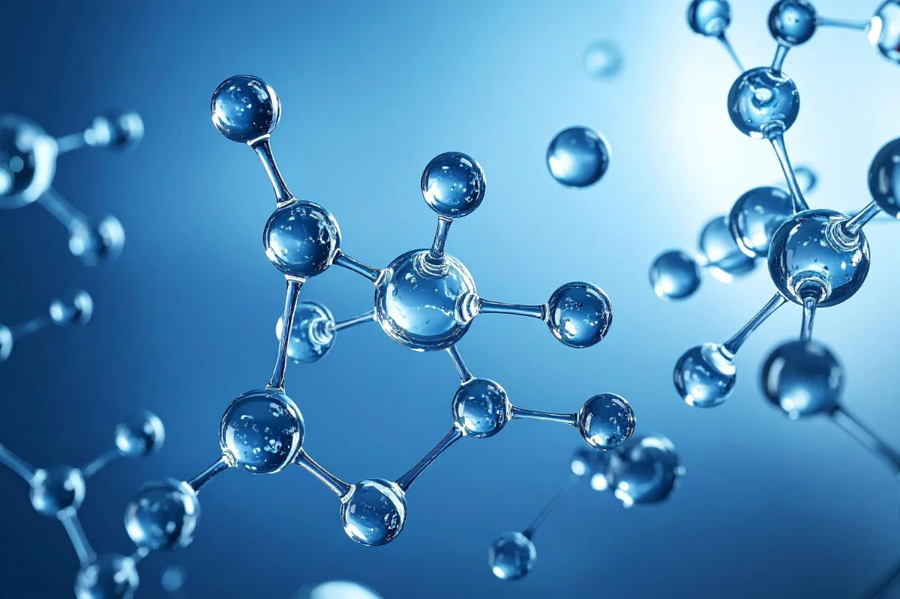
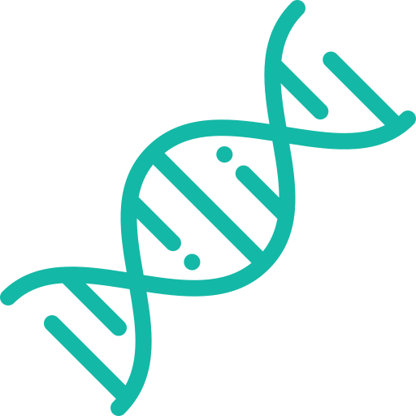

BIOQUÍMICA
A química da vida
BIOQUÍMICA
A química da vida


A Bioquímica é a ciência que estuda as bases químicas dos seres vivos, investigando as biomoléculas, suas estruturas, reações e funções que mantêm a vida.
Ela conecta a Química e a Biologia para explicar desde os processos celulares até as funções de tecidos e organismos inteiros.
Saiba maisMoléculas formadas por aminoácidos que desempenham funções estruturais, enzimáticas, hormonais e de defesa nos organismos.
SAIBA MAISSão a principal fonte de energia para as células e também participam da formação de estruturas biológicas.
SAIBA MAISAtuam no armazenamento de energia, na composição das membranas celulares e na proteção de órgãos.
SAIBA MAISResponsáveis pelo armazenamento e transmissão das informações genéticas por meio do DNA e do RNA.
SAIBA MAISMoléculas formadas por aminoácidos que desempenham funções estruturais, enzimáticas, hormonais e de defesa nos organismos.
Permite entender como os nutrientes são absorvidos e utilizados pelo organismo.
Contribui para o desenvolvimento de novas tecnologias aplicadas à saúde, agricultura e indústria.
Fundamental para a criação e estudo de medicamentos e seus efeitos no corpo humano.

Ajuda a compreender a hereditariedade e os mecanismos de transmissão das características biológicas.

O DNA humano possui aproximadamente 3 bilhões de pares de bases responsáveis pelo armazenamento das informações genéticas.

As enzimas são capazes de acelerar reações químicas milhões de vezes mais rapidamente do que ocorreriam naturalmente.
Milhares de reações bioquímicas acontecem a cada segundo dentro das células do corpo humano.